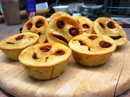
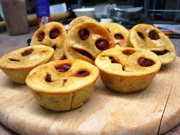

Ingredients:
Ingredients for the Pastry
- 2 cups All-purpose flour
- 1 tsp salt
- 2/3 cup plus 2 Tbls shortening
- 4 to 6 Tbls cold water
Ingredients for the Filling
- 1/3 to 1/2 cup sugar
- 1/4 cup all-purpose flour
- 1/2 tsp ground cinnamon
- 1/2 tsp ground nutmeg
- 1/8 tsp salt
- 8 cups thinly sliced/peeled tart apples about 8 med.
- 2 Tbls butter or margarine
Directions:
- In medium bowl, mix 2 cups flour and 1 teaspoon salt. Cut in shortening, using pastry blender (or pulling 2 table knives through ingredients in opposite directions), until particles are size of small peas. Sprinkle with cold water, 1 tablespoon at a time, tossing with fork until all flour is moistened and pastry almost cleans side of bowl, 1 to 2 teaspoons more water can be added if necessary.
- Gather pastry into a ball. Divide in half; shape into 2 flattened rounds on lightly floured surface. Wrap in plastic wrap; refrigerate about 45 minutes or until dough is firm and cold, yet pliable. This allows the shortening to become slightly firm, which helps make the baked pastry more flaky. If refrigerated longer, let pastry soften slightly before rolling.
- Heat oven to 425°F. With floured rolling pin, roll one pastry round into round 2 inches larger than upside-down 9-inch glass pie plate. Fold pastry into fourths; place in pie plate. Unfold and ease into plate, pressing firmly against bottom and side.
- In large bowl, mix sugar, 1/4 cup flour, the cinnamon, nutmeg and 1/8 teaspoon salt. Stir in apples until well mixed. Spoon into pastry-lined pie plate. Cut butter into small pieces; sprinkle over filling. Trim overhanging edge of pastry 1/2 inch from rim of plate.
- Roll other round of pastry into 10-inch round. Fold into fourths and cut slits so steam can escape. Unfold top pastry over filling; trim overhanging edge 1 inch from rim of plate. Fold and roll top edge under lower edge, pressing on rim to seal; flute as desired. Cover edge with 2- to 3-inch strip of foil to prevent excessive browning.
- Bake 40 to 50 minutes or until crust is brown and juice begins to bubble through slits in crust, removing foil for last 15 minutes of baking. Serve warm if desired.